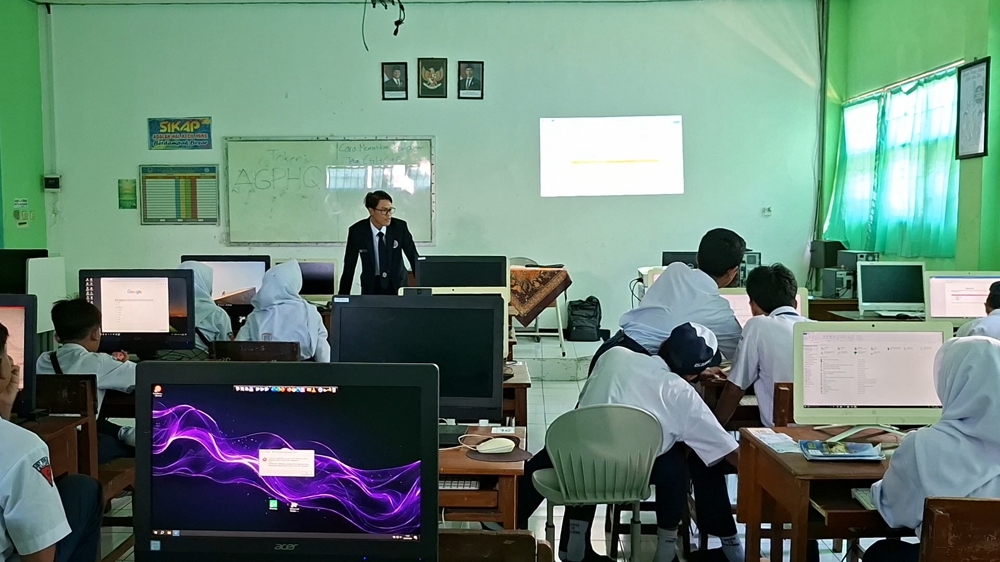
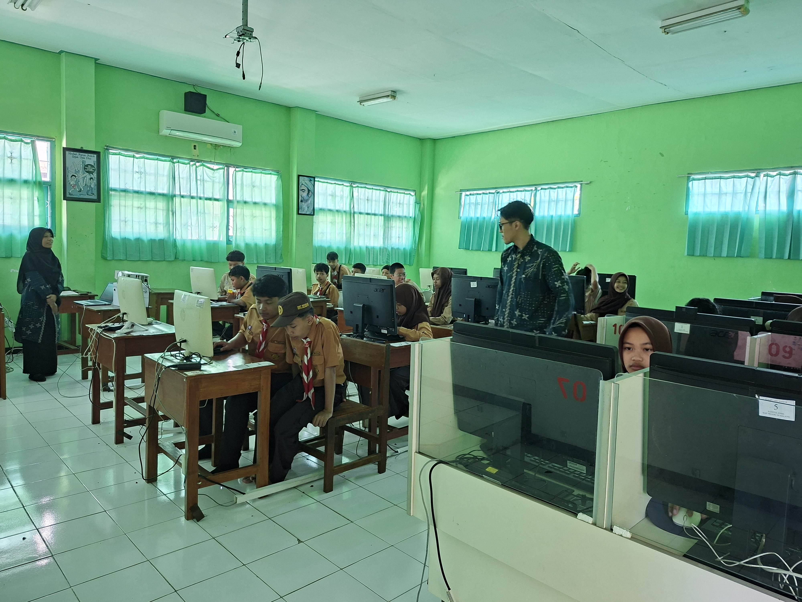
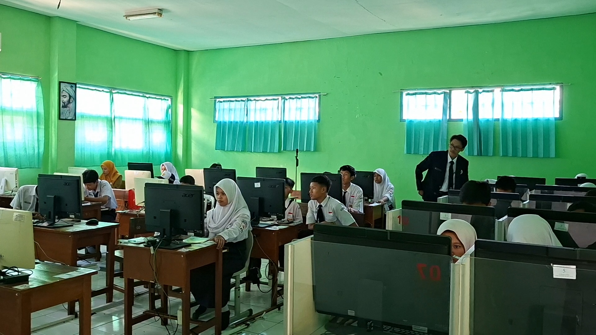
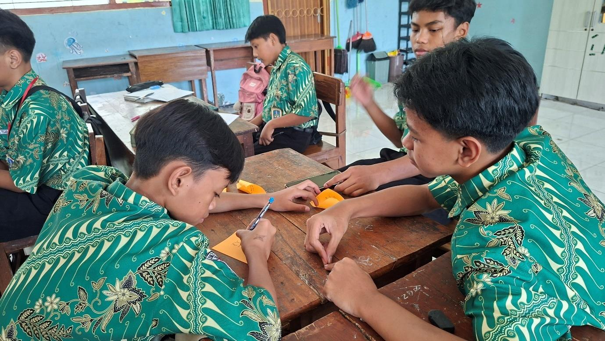
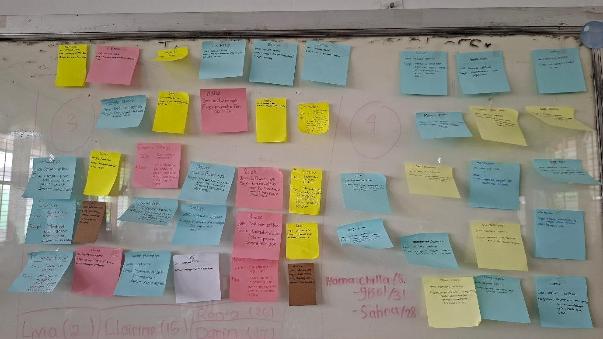
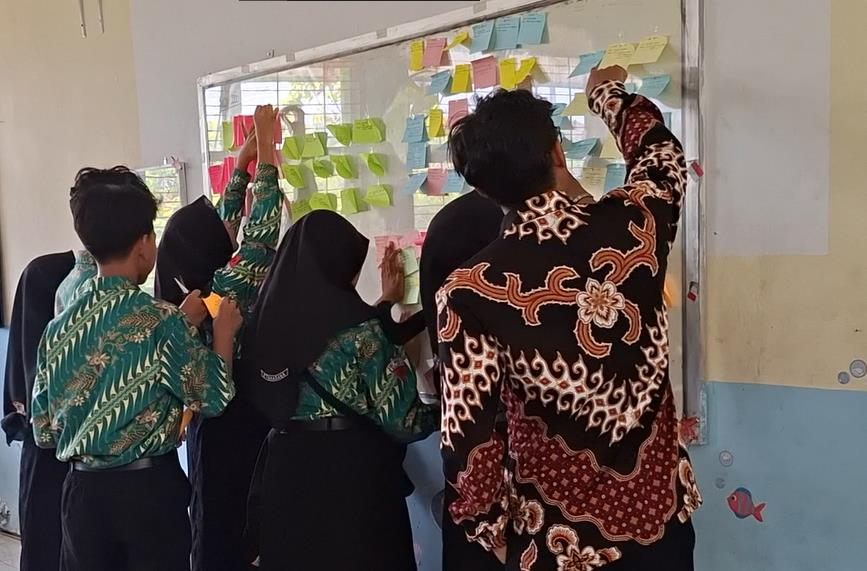
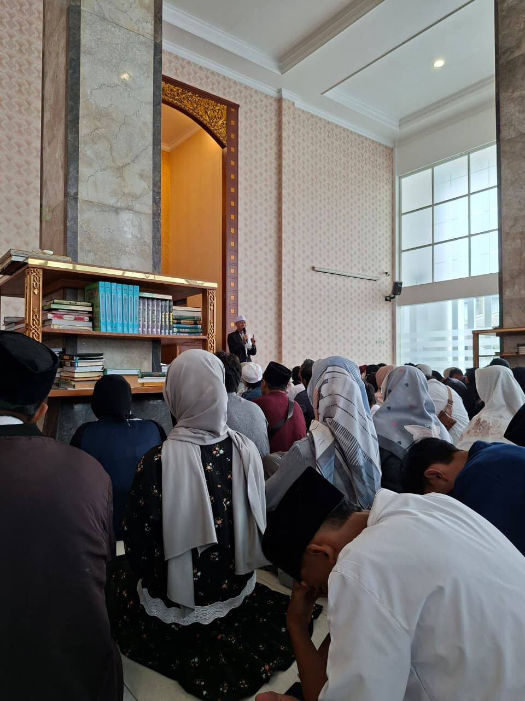

Pusat Berkas & Multimedia
Pusat repositori lengkap seluruh berkas dokumen perkuliahan, modul pembelajaran, lembar kerja, dokumentasi foto, serta rekaman video praktik PPL PPG Prajabatan.

Tahap Pembukaan & Pengondisian Kelas
Pendahuluan Pembelajaran · Doa Bersama, Presensi Kehadiran & Apersepsi Pembelajaran Siklus 1

Kegiatan Inti & Diskusi Terbimbing
Kegiatan Inti · Peserta Didik Berdiskusi Menyelesaikan Studi Kasus Optimasi Penjadwalan

Presentasi Hasil Diskusi Kelompok
Penyajian Hasil · Perwakilan Kelompok Memaparkan Solusi Algoritma di Depan Kelas

Tanggapan & Sesi Tanya Jawab Antar Kelompok
Aktivitas Kelas · Kelompok Lain Menyimak, Memberikan Tanggapan & Guru Memberikan Penguatan

Tahap Pendahuluan & Apersepsi Pembelajaran
Pendahuluan Pembelajaran · Doa Pembuka, Presensi Kehadiran, Motivasi & Penyampaian Tujuan Materi

Kegiatan Inti & Eksplorasi Konsep Terbimbing
Kegiatan Inti · Peserta Didik Berdiskusi dan Mengidentifikasi Konsep Sistem Komputer

Presentasi Hasil Diskusi & Tanggapan Antar Kelompok
Penyajian Hasil · Perwakilan Kelompok Mempresentasikan Solusi di Depan Kelas

Tahap Pendahuluan & Apersepsi Praktik Lab
Pendahuluan Kelas, Presensi Kehadiran, Motivasi & Penjelasan Alur Pembelajaran Hardware

Praktik Penyelidikan Hardware Berbantuan Google Lens
Penyelidikan Langsung Komponen Internal CPU & Penelusuran Informasi Berbasis AI Google Lens

Pengerjaan LKPD & Pengelompokan Komponen IPOS
Diskusi Kelompok, Dokumentasi Komponen & Pengisian Lembar Kerja Peserta Didik (LKPD)

Tahap Pendahuluan & Stimulus Kasus Raka
Pembukaan Kelas, Presensi Kehadiran, Apersepsi & Stimulus Studi Kasus Software Komputer

Kegiatan Inti & Diskusi Kelompok SIAP TEMPEL
Kolaborasi Antar Siswa Menyelesaikan Tantangan Pengelompokan Software dengan Papan Bersekat

Hasil Karya Pembelajaran Murid pada Media Papan Sekat
Dokumentasi Produk Pembelajaran Kelompok Menggunakan Sticky Notes dan Papan Bersekat SIAP TEMPEL

Bimbingan Siswa Lomba Coding & Pemrograman
Pendampingan persiapan dan pelatihan logika pemrograman bagi peserta didik sekolah

Juara 2 Malang Young Coder Competition 2026 (Kategori AI)
Prestasi membimbing peserta didik meraih Juara 2 pada ajang Malang Young Coder Competition

Juara 3 Malang Young Coder Competition 2026 (Kategori AI)
Prestasi membimbing peserta didik meraih Juara 3 pada ajang Malang Young Coder Competition

Pelaksanaan Piket & Tata Tertib Sekolah
Partisipasi aktif dalam piket sekolah harian, monitoring ketertiban dan presensi siswa

Monitoring Kehadiran Siswa di Kelas
Kegiatan keliling kelas untuk merekap dan memverifikasi presensi kehadiran peserta didik

Penyambutan Siswa & Pembiasaan Budaya 5S
Penerapan budaya Senyum, Sapa, Salam, Sopan, dan Santun di gerbang sekolah setiap pagi

Praktik PPL Terbimbing Siklus 1 (Insert Picture & Shapes)
Praktik pembelajaran Informatika kelas VII materi penyisipan objek dan teks dekoratif pada Ms. Word

Praktik PPL Terbimbing Siklus 2 (Insert Table)
Praktik pembelajaran pemformatan tabel dan penataan data terstruktur pada Ms. Word

Praktik PPL Terbimbing Siklus 3 (Symbol & Equation)
Praktik pembelajaran penyisipan formula matematika dan simbol ilmiah pada Ms. Word

Praktik PPL Terbimbing Siklus 4 (Evaluasi Akhir)
Pelaksanaan pembelajaran siklus 4 dan evaluasi pemahaman peserta didik di kelas

Media Pembelajaran Siklus 4 Terbimbing
Dokumentasi media dan bahan ajar yang digunakan pada PPL Terbimbing Siklus 4

Aktivitas Siswa Siklus 4 Terbimbing
Suasana kerja aktif dan kolaboratif peserta didik di ruang kelas PPL Terbimbing

Apel Peringatan Hari Kartini
Pelaksanaan apel bersama bapak/ibu guru dan seluruh peserta didik dalam rangka Hari Kartini

Foto Bersama DPL dan Guru Pamong PPL
Dokumentasi koordinasi evaluasi dan refleksi bimbingan bersama DPL dan Guru Pamong

Penerimaan Mahasiswa PPL di Sekolah Mitra
Penyambutan dan penerimaan resmi mahasiswa PPL PPG di SMP Negeri 18 Malang

Penjemputan & Pelepasan Mahasiswa PPL
Penjemputan resmi mahasiswa PPL PPG oleh pihak universitas setelah program selesai

Diskusi Kolaboratif PPL di LMS
Kolaborasi mahasiswa PPL dalam menganalisis data observasi dan tugas perkuliahan LMS

Distribusi Program Makan Bergizi Gratis (MBG)
Pendampingan distribusi program makanan bergizi gratis untuk mendukung nutrisi murid

Workshop Penyusunan Proposal Artikel Ilmiah
Kegiatan pembekalan penulisan artikel ilmiah berbasis hasil praktik PPL di sekolah mitra

Workshop Finalisasi Artikel Ilmiah
Review naskah dan penyempurnaan draft artikel ilmiah untuk publikasi hasil pembelajaran

Kegiatan Istighosah & Doa Bersama Sekolah
Kegiatan istighosah rutin guna memupuk karakter spiritual dan religius civitas sekolah
Foto Profil Calon Guru Profesional
Foto portofolio profesional Muhammad Fajrul Fahmi, S.Kom - Mahasiswa PPG Prajabatan

Foto Model Guru Inspiratif
Dokumentasi visual representasi figur guru inspiratif dan berpusat pada peserta didik

Foto Refleksi Diri Praktik Mengajar
Dokumentasi kegiatan refleksi dan evaluasi praktik pembelajaran berkelanjutan
Tidak Ada Foto Ditemukan
Tidak ada foto yang cocok dengan kata kunci pencarian Anda. Coba kata kunci yang lain.
Video Praktik Pembelajaran Mandiri Siklus 1
Optimasi Penjadwalan & Berpikir KomputasionalPenerapan model Problem-Based Learning (PBL) pada materi berpikir komputasional optimasi penjadwalan. Menampilkan pembukaan kesepakatan smartphone, analogi visual wadah toples, aktivitas siswa di papan tulis, hingga evaluasi post-test barcode scan.
Video Praktik Pembelajaran Mandiri Siklus 2
Sistem Komputer & Struktur DataPembelajaran interaktif materi struktur data dan sistem komputer dengan pendekatan kontekstual. Menampilkan tahap pendahuluan apersepsi, eksplorasi konsep terstruktur, serta presentasi hasil kerja kelompok siswa.
Video Praktik Pembelajaran Mandiri Siklus 3
Praktik Penyelidikan Hardware Komputer & Google LensPembelajaran mendalam (deep learning) di laboratorium komputer melalui penyelidikan autentik membuka casing CPU, identifikasi komponen Motherboard, RAM, CPU, HDD dengan AI Google Lens, serta pengelompokan alur IPOS pada LKPD.
Video Praktik Pembelajaran Mandiri Siklus 4
Software Komputer & Media Interaktif SIAP TEMPELPenerapan model Discovery Learning materi perangkat lunak komputer berbantuan media konkret papan sekat dan sticky notes SIAP TEMPEL, berawal dari stimulus studi kasus nyata kebutuhan software Raka.
Tidak Ada Video Ditemukan
Tidak ada rekaman video yang cocok dengan kata kunci pencarian Anda.
PPL Mandiri (Semester 2)
17 BerkasModul Ajar Siklus 1 - 4 dan Lembar Kerja Pelaksanaan PPL Mandiri SMP Negeri 18 Malang
PPL Terbimbing (Semester 1)
19 BerkasRPP Siklus 1 - 3, Modul Praktikum, Penilaian Lampiran 7 & 8, serta Lembar Kerja PPL Terbimbing
Etika dan Profesionalisme Guru
27 BerkasLembar Kerja Topik 1-5, Dokumen Refleksi LK 2, dan Majalah UTS EPG
Projek Kepemimpinan
9 BerkasPerencanaan Projek, Proposal Pengabdian UTS, PPT UAS, dan Dokumen Refleksi LK 2
Seminar Pendidikan Profesi Guru
3 BerkasVisi Pribadi Calon Guru (LK 1.2), Rancangan Inovatif SIAP TEMPEL (LK 4), dan Refleksi LK 2
Pembelajaran Sosial dan Emosional
22 BerkasLembar Kerja Topik 1-5 dan Refleksi Pengalaman Belajar LK 2
Pembelajaran Mendalam dan Asesmen Lanjut
6 BerkasLembar Kerja Topik 1-5 dan Refleksi Pengalaman Belajar LK 2
Filosofi Pendidikan dan Pendidikan Nilai
14 BerkasTugas Alur MERDEKA Topik 1-4 dan Refleksi Pengalaman Belajar LK 2
Pemahaman tentang Peserta Didik dan Pembelajaran
13 BerkasTugas Alur MERDEKA Topik 1-4 tentang Karakteristik & Pemahaman Peserta Didik
Pembelajaran Mendalam dan Asesmen Dasar
10 BerkasPrinsip Pengajaran dan Asesmen yang Efektif I (Topik 1-4 & Refleksi LK 2)
Pola Pikir Bertumbuh (Growth Mindset)
14 BerkasLembar Kerja LK 1.1 - LK 4.3 dan Refleksi Pengalaman Belajar LK 2
Computational Thinking
19 BerkasLembar Kerja Topik 1 - Topik 7 dan Refleksi Pengalaman Belajar LK 2
Tidak Ada Dokumen Ditemukan
Tidak ada berkas perkuliahan yang sesuai dengan kueri pencarian Anda.
Rekaman Video PPL Mandiri Siklus 1 - 4
Video Praktik Pembelajaran Mandiri Siklus 1
Penerapan model Problem-Based Learning (PBL) pada materi berpikir komputasional optimasi penjadwalan. Menampilkan pembukaan kesepakatan smartphone, analogi visual wadah toples, aktivitas siswa di papan tulis, hingga evaluasi post-test barcode scan.
Video Praktik Pembelajaran Mandiri Siklus 2
Pembelajaran interaktif materi struktur data dan sistem komputer dengan pendekatan kontekstual. Menampilkan tahap pendahuluan apersepsi, eksplorasi konsep terstruktur, serta presentasi hasil kerja kelompok siswa.
Dokumentasi PPL Mandiri & Non Mengajar
Tahap Pembukaan & Pengondisian Kelas
Pendahuluan Pembelajaran · Doa Bersama, Presensi Kehadiran & Apersepsi Pembelajaran Siklus 1
Kegiatan Inti & Diskusi Terbimbing
Kegiatan Inti · Peserta Didik Berdiskusi Menyelesaikan Studi Kasus Optimasi Penjadwalan
Presentasi Hasil Diskusi Kelompok
Penyajian Hasil · Perwakilan Kelompok Memaparkan Solusi Algoritma di Depan Kelas
Tanggapan & Sesi Tanya Jawab Antar Kelompok
Aktivitas Kelas · Kelompok Lain Menyimak, Memberikan Tanggapan & Guru Memberikan Penguatan